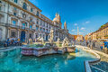
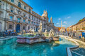

Roma — A Cidade Eterna
Roma, a capital de Itália, é uma das cidades mais antigas e fascinantes do mundo. Fundada há mais de 2.500 anos, foi o coração do Império Romano e continua a ser um dos destinos turísticos mais visitados do planeta.
O Coliseu, a Fonte de Trevi, o Panteão e a Praça de São Pedro são apenas alguns dos ícones que contam a sua história milenar. Roma é um museu a céu aberto, onde o passado e o presente convivem harmoniosamente.